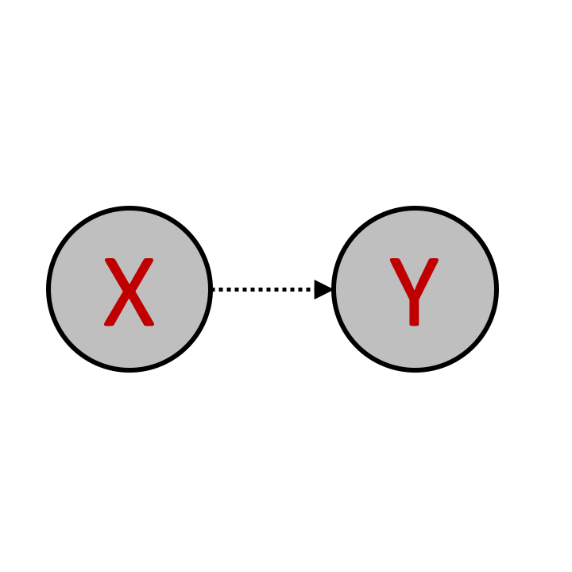
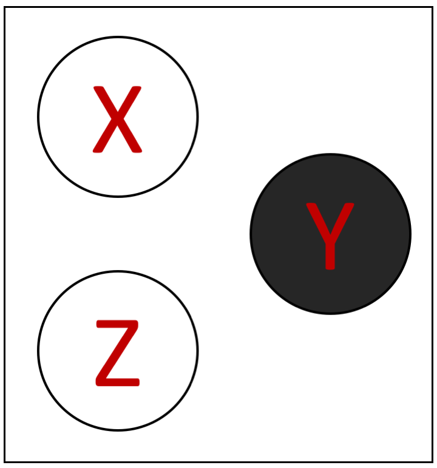
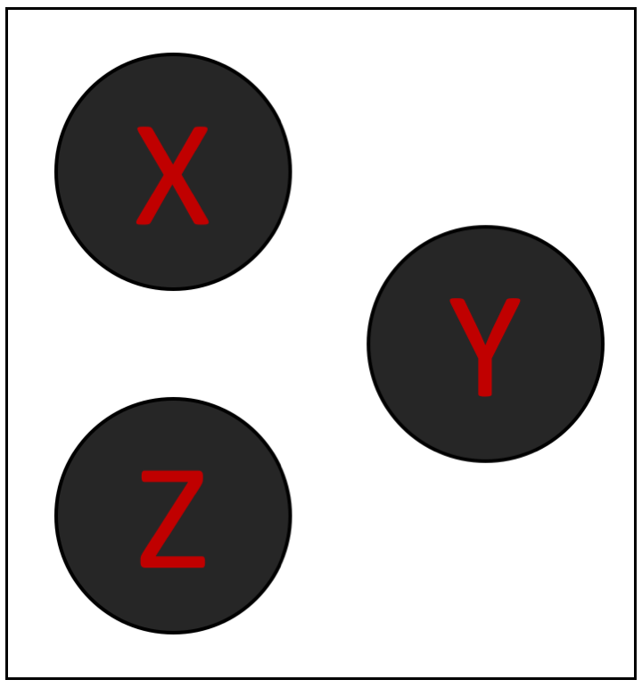

<!DOCTYPE html>
<html>
    <head>
        <title>My experiment</title>
        <script src="../../jspsych-6.1.0/jspsych.js"></script>
         <script src="../../jspsych-6.1.0/plugins/jspsych-survey-multi-choice.js"></script>
         <script src="../../jspsych-6.1.0/plugins/jspsych-html-keyboard-response.js"></script>         <script src="../../jspsych-6.1.0/plugins/jspsych-instructions.js"></script>
         <script src="custom_plugins/jspsych-two-image-slider-response.js"></script>
         <script src="../../jspsych-6.1.0/plugins/jspsych-image-keyboard-response.js"></script>
        <link href="../../jspsych-6.1.0/css/jspsych.css" rel="stylesheet" type="text/css"></link>
    </head>
    <body></body>
    
     
  <script>


    /* create timeline */
    N_gs = 1
    N_qs = 2
    train_trials = N_gs * N_qs
    test_trials = 2
    N_trials = test_trials + train_trials
    
    var condition = jsPsych.randomization.sampleWithReplacement(['poscorr', 'negcorr'], 1);
    
    console.log(condition)
    
    if (condition == 'poscorr'){
    train_probs = [ 102.,    3.,    2.,   13.,   10.,    2.,   13.,    3.,   13.,
          3.,    2.,    0.,    0.,    7.,    0.,    0.,    2.,    3.,
          2.,    0.,    2.,    0.,    1.,    2.,    0.,    0.,   13.,
         13.,    0.,    0.,    2.,    1.,    0.,    2.,    0.,    2.,
         10.,    7.,    1.,    1.,   22.,    1.,    1.,    7.,   10.,
          2.,    0.,    2.,    0.,    1.,    2.,    0.,    0.,   13.,
         13.,    0.,    0.,    2.,    1.,    0.,    2.,    0.,    2.,
          3.,    2.,    0.,    0.,    7.,    0.,    0.,    2.,    3.,
         13.,    3.,   13.,    2.,   10.,   13.,    2.,    3.,  102.]
    } else if (condition == 'negcorr'){
    
    train_probs = [  13.,    3.,   13.,    2.,   10.,   13.,    2.,    3.,  102.,
          3.,    2.,    0.,    0.,    7.,    0.,    0.,    2.,    3.,
         13.,    0.,    0.,    2.,    1.,    0.,    2.,    0.,    2.,
          2.,    0.,    2.,    0.,    1.,    2.,    0.,    0.,   13.,
         10.,    7.,    1.,    1.,   22.,    1.,    1.,    7.,   10.,
         13.,    0.,    0.,    2.,    1.,    0.,    2.,    0.,    2.,
          2.,    0.,    2.,    0.,    1.,    2.,    0.,    0.,   13.,
          3.,    2.,    0.,    0.,    7.,    0.,    0.,    2.,    3.,
        102.,    3.,    2.,   13.,   10.,    2.,   13.,    3.,   13.]
    }
    
    test_probs = [   0.,    0.,    0.,    0.,    3.,    0.,    0.,    0.,    0.,
          0.,    3.,    0.,    3.,   26.,    3.,    0.,    3.,    0.,
          0.,    0.,    0.,    0.,    3.,    0.,    0.,    0.,    0.,
          0.,    3.,    0.,    3.,   26.,    3.,    0.,    3.,    0.,
          3.,   26.,    3.,   26.,  205.,   26.,    3.,   26.,    3.,
          0.,    3.,    0.,    3.,   26.,    3.,    0.,    3.,    0.,
          0.,    0.,    0.,    0.,    3.,    0.,    0.,    0.,    0.,
          0.,    3.,    0.,    3.,   26.,    3.,    0.,    3.,    0.,
          0.,    0.,    0.,    0.,    3.,    0.,    0.,    0.,    0.]
        
    var graphs0 = []    
    for (var i = 1; i < 82; i++) {
    if (i < 10) {
        graphs0 = graphs0.concat('Slide0' + i);
        } else{
        graphs0 = graphs0.concat('Slide' + i);
        }
          
    }   
    var train_graphs = jsPsych.randomization.sampleWithReplacement(graphs0, 500, train_probs).slice(start = 0, end = train_trials);
    
    var test_graphs = jsPsych.randomization.sampleWithReplacement(graphs0, 500, test_probs).slice(start = 0, end = test_trials);
    
    graphs = train_graphs.concat(test_graphs)
    
        
    var queries0 = []    
    for (var i = 1; i < 9; i++) {
          queries0 = queries0.concat('Slide' + i);
        }

    var reps = 1 + N_trials / 8;
    var queries = jsPsych.randomization.repeat(queries0, reps).slice(start = 0, end = N_trials);
    
    var timeline = [];
    

    /* define welcome message trial 
    var welcome = {
      type: "html-keyboard-response",
      stimulus: "Welcome to the experiment. Press any key to begin."
    };
    timeline.push(welcome);*/

    /* define instructions trial */
    var intro = {
      type: "html-keyboard-response",
      stimulus: "<p> This study is part of a research project conducted by " +
                "Ishita Dasgupta, Harvard University.</p>"+
                "<p> We want to examine people's intuitions about causes and effects.</p>" +
                "<p> Please read the instructions carefully and try to perform as well as you can.</p>" +
              "<p> If you have any questions, please write an email to  idasgupta@physics.harvard.edu </p><br>"+
              "<p>Press any key to begin.</p>",
    };
    timeline.push(intro);
    
    var instructions = {
      type: "instructions",
      pages: [
        'Welcome to the experiment. Click next to continue to the instructions.',
        
        'In this experiment, we want to test your intuitions about cause and effect. <br>'+
        'X causes Y is represented as: </img>',
        
        'There can be more than one cause for the same effect. For example:<br>'+
        '</img><br>'+
        'Here both X and Z independently can cause Y <br> If both causes occur, then Y is more likely to occur than if only one or none of the causes occurs.',
        
        'The presence of a cause X does not guarantee that the effect Y will occur. <br> It only increases the probability that Y will occur.',
        
        'How much this probability changes is determined by the <b>strength of the causal links</b>. <br>The strength is indicated by the type of arrow',
        
        'The three types of causal links are : <br> </img> <b>Weak</b> causal link. <br> Everytime the cause occurs, the effect has a <b>20%</b> probability of ocurring.'+
        '<hr> </img> <b>Moderate</b> causal link. <br>Everytime the cause occurs, the effect has a <b>50%</b> probability of ocurring.' +
        '<hr> </img> <b>Strong</b> causal link.<br> Everytime the cause occurs, the effect has a <b>80%</b> probability of ocurring. <br>',
        
        'The strength of causal links can be <b>mixed</b> in the same causal structure, for example:'+
        '<br> </img> <br> Indicates <b> X strongly causes Y </b> and <b> Z weakly causes Y </b>. <br>',
         
         'The causes (X and Z) also do not always occur.',
         
        'The <b>probability of the causes</b> occurring is indicated by <br> the type of arrows pointing to the cause', 
        
        'The three types of arrows have similar meanings here : <br> </img> <b>Weak</b> probability of occurrence. <br> The cause has a <b>20%</b> probability of occurring.<hr>'+
        '</img> <b>Moderate</b> probability of occurrence. <br> The cause has a <b>50%</b> probability of occurring.<hr>' +
        '</img> <b>Strong</b> probability of occurrence. <br> The cause has a <b>80%</b> probability of occurring. <br>',
        
        'The probabilities of the two different causes can be <b>mixed</b> in the same causal structure, for example:'+
        '<br> </img> <br> Indicates that <b> X is moderately likely </b>  while <b> Z is moderately likely. </b> <br>',
        
        'Finally, there is some <b> additional noise</b>. <br>'+
        'The effect Y can sometimes occur (with a <b>20%</b> probability) even when neither of the causes (X, Z) occurs. <br> <b>This remains the same across all causal structures</b>, and is shown by the weak arrow pointing to Z: <br> </img> <br>',
        
        'An example causal structure you might see in this experiment is <br> </img> <br> <br>'+
        
        /*'A is moderately likely to occur <br> B is strongly likely to occur<br> <br>B strongly causes C <br> A moderately causes C<br> <br>',*/
        
        'Given a causal structure of this sort, you will have to make judgments about the probability that X, Y, and Z occur. <br> This is described in the next section.',
        
        'After you are given a specific causal structure, you will see one of the following eight possible <b>states</b> <br> <br>'+
        '</img> or '+
        '</img> or '+
        '</img> or '+
        '</img>  or <br> <hr> <br>'+
        '</img> or '+
        '</img> or '+
        '</img> or '+
        '</img> <br> <br>'+
        'Black indicates that it ocurred, white indicates it did not occur.<br>'+
        'Your task is to guess the probability of the specific state, given the underlying causal structure. <br>',
        
        'We first go through a few examples to build intuitions for the domain.',
        
        'For Causal structure : </img> <br>'+
        '</img> is much more probable than </img>',
        
        
        'For Causal structure : </img> <br>'+
        '</img> is more probable than </img>, <br> but they are both less probable than </img>',

        
        /*'The maximum probability for any pair of causal structure and world state is around 61.95%.<br> This is achieved by the following: <br>'+
        'Causal structure : </img> <br>'+
        'State of the world : </img><hr>'+
        'Both A and B are strongly likely to occur, and they both strongly cause C -- therefore it is very likely that all of the nodes (A, B, C) occur. This makes the proposed state of the world very likely.',
        
        'The minimum probability for any pair of causal structure and world state is around 0.128%.<br> This is achieved by the following: <br>'+
        'Causal structure : </img> <br>'+
        'State of the world : </img><hr>'+
        'Both A and B are only weakly likely to appear, so it is unlikely that A and B are on. Further, they both strongly cause C, so if they occur, it is very unlikely that C will not occur. This makes the proposed state of the world very unlikely.',
        
        'You will be given a response slider to enter your response. <br>'+
        'The maximum value on this slider will be 62% (~61.95%), and the minimum will be 0% (~0.128%), <br> since this is encompasses the range of possible probabilities in this domain. <br> The slider will be initialized at the mid-point of this range at 31%.',
        
        'Note however that the average probability over all possible states is much lower than the midpoint of 31%. <br>'+
        'If all the states were equally likely, they would each occur with probability of 100 / 8 = 12.5%.<br> '+
        'Therefore the average probability is 12.5% -- this means that most responses shoudl lie below the midpoint of 31%.',*/

        'Once you enter the experiment, you will first see only the causal structure for 2 seconds<br> Please use this time to think about what the probabilities of different states might be under that causal structure. <br> <br> A state will then appear, and you will have to enter a judgement for how probable that state is, on a slider. <br>  The slider goes from 0 to 100. 0 on this scale means Very unlikely, 100 means Very likely. <br> Please try to be as accurate in your judgement as possible.',    
        
        'You will have to answer a few comprehension questions on the next page before starting the experiment. <br> If you do no answer these questions correctly, you will be redirected to a page that contains a condensed version of these instructions <br> You will then be able to answer the comprehension questions again.<br> If you do not answer these questions correctly the second time, the experiment will end.'
    ],
    show_clickable_nav: true
    };
    
    /*timeline.push(instructions);*/
    
    
        
    var comprehension = {
      type: 'survey-multi-choice',
      preamble: 'Please answer the following comprehension questions', 
      button_label: 'Submit',
      questions: [
        {prompt: "If a cause ocurred, the effect will always occur", name: 'prob_c', options: ['True', 'False'], required:true}, 
        {prompt: "How many types of causal links are there (that vary in strength)", name: 'types', options: ['2', '4', '3', '1'], required:true},
        {prompt: "If a cause does not occur, the effect cannot occur", name: 'prob_e', options: ['True', 'False'], required:true}, 
        {prompt: "A black background in a state means that variable did occur.", name: 'bg', options: ['True', 'False'], required:true},
        {prompt: "What is your task in this experiment?", name: 'task', options: ['To judge how probable a specific causal structure is', 'To judge how probable a specific state is in general', 'To judge how probable a state is given a specific causal structure'], required:true},
      ],
    };
    
    
    function right_answers2(q1, q2, q3, q4, q5){
    right = (q1 && q2 && q3 && q4 && q5);
    return right;
    }
    
    
    function right_answers(data){
    q1 = data['prob_c'] == 'False';
    q2 = data['types'] == '3';
    q3 = data['prob_e'] == 'False';
    q4 = data['bg'] == 'True';
    q5 = data['task'] == 'To judge how probable a state is given a specific causal structure';
    right = (q1 && q2 && q3 && q4 && q5);
    return right;
    }
    
    timeline.push(comprehension);
    
     var success = {
      type: "html-keyboard-response",
      stimulus: "You have answered the comprehension questions correctly! <br>"+
              "<p>Press any key to begin the experiment.</p>",
    };
    
     var failure = {
      type: "html-keyboard-response",
      stimulus: "You have not answered the comprehension questions correctly. <br>"+
              "<p>Press any key to go to the instructions again.</p>",
    };
    
    
    var short_instructions = {
      type: "instructions",
      pages: [
        'X causes Y is represented as: </img><hr> <hr>'+
        
        'There can be more than one cause for the same effect. For example:<br>'+
        '</img><br>'+
        'Here both X and Z independently can cause Y <br> If both causes occur, then Y is more likely to occur than if only one or none of the causes occurs.<hr> <hr>'+
        
        'The presence of a cause X does not guarantee that the effect Y will occur. <br> It only increases the probability that Y will occur.<hr> <hr>'+
        
        'How much this probability changes is determined by the <b>strength of the causal links</b>. <br>The strength is indicated by the type of arrow<hr> <hr>'+
        
        'The three types of causal links are : <br> </img> <b>Weak</b> causal link. <br> Everytime the cause occurs, the effect has a <b>20%</b> probability of ocurring.'+
        '<hr> </img> <b>Moderate</b> causal link. <br>Everytime the cause occurs, the effect has a <b>50%</b> probability of ocurring.' +
        '<hr> </img> <b>Strong</b> causal link.<br> Everytime the cause occurs, the effect has a <b>80%</b> probability of ocurring. <br><hr> <hr>'+
        
        'The strength of causal links can be <b>mixed</b> in the same causal structure, for example:'+
        '<br> </img> <br> Indicates <b> X strongly causes Y </b> and <b> Z weakly causes Y </b>. <br><hr> <hr>'+
         
         'The causes (X and Z) also do not always occur.<hr> <hr>'+
         
        'The <b>probability of the causes</b> occurring is indicated by <br> the type of arrows pointing to the cause<hr> <hr>'+ 
        
        'The three types of arrows have similar meanings here : <br> </img> <b>Weak</b> probability of occurrence. <br> The cause has a <b>20%</b> probability of occurring.<hr>'+
        '</img> <b>Moderate</b> probability of occurrence. <br> The cause has a <b>50%</b> probability of occurring.<hr>' +
        '</img> <b>Strong</b> probability of occurrence. <br> The cause has a <b>80%</b> probability of occurring. <br><hr> <hr>'+
        
        'The probabilities of the two different causes can be <b>mixed</b> in the same causal structure, for example:'+
        '<br> </img> <br> Indicates that <b> X is moderately likely </b>  while <b> Z is moderately likely. </b> <br><hr> <hr>'+
        
        'Finally, there is some <b> additional noise</b>. <br>'+
        'The effect Y can sometimes occur (with a <b>20%</b> probability) even when neither of the causes (X, Z) ocurred. <br> <b>This remains the same across all causal structures</b>, and is shown by the weak arrow pointing to Z: <br> </img> <br><hr> <hr>'+
        
        'An example causal structure you might see in this experiment is <br> </img> <br> <br>'+
        
        /*'A is moderately likely to occur <br> B is strongly likely to occur<br> <br>B strongly causes C <br> A moderately causes C<br> <br><hr> <hr>'+*/
        
        'Given a causal structure of this sort, you will have to make judgments about the probability that X, Y, and Z occur. <br> This is described in the next section.<hr> <hr>'+
        
        'After you are given a specific causal structure, you will see one of the following eight possible <b>states</b> <br> <br>'+
        '</img> or '+
        '</img> or '+
        '</img> or '+
        '</img>  or <br> <hr> <br>'+
        '</img> or '+
        '</img> or '+
        '</img> or '+
        '</img> <br> <br>'+
        'Black indicates that it ocurred, white indicates it did not occur.<br>'+
        'Your task is to guess the probability of the specific state, given the underlying causal structure. <br><hr> <hr>'+
        
        'We first go through a few examples to build intuitions for the domain.<hr> <hr>'+
        
        'For Causal structure : </img> <br>'+
        '</img> is much more probable than </img><hr> <hr>'+
        
        
        'For Causal structure : </img> <br>'+
        '</img> is more probable than </img>, <br> but they are both less probable than </img><hr> <hr>'+

        'Once you enter the experiment, you will first see only the causal structure for 2 seconds<br> Please use this time to think about what the probabilities of different states might be under that causal structure. <br> <br> A state will then appear, and you will have to enter a judgement for how probable that state is, on a slider. <br>  The slider goes from 0 to 100. 0 on this scale means Very unlikely, 100 means Very likely. <br> Please try to be as accurate in your judgement as possible.<hr> <hr>'+    
        
        '<b>You will have to answer a few comprehension questions on the next page before starting the experiment. <br> If you fail to answer these questions correctly, the enxperiment will end.</b>'
    ],
    show_clickable_nav: true
    };


    /* test trials  */
    
    var all_test_trials = []
    all_test_trials.push(success)
    
    for (var trial = 0; trial < N_trials; trial++){
    
        var view_trial = { 
          type: "image-keyboard-response",
          stimulus: 'draw_stimuli/'+graphs[trial]+'.png',
          stimulus_height: 300,
          choices: jsPsych.NO_KEYS, 
          trial_duration: 2000,
          }
          
        all_test_trials.push(view_trial);

        var response_trial = {
          type: "two-image-slider-response",
          stimulus_height: 300,
          resp_stimulus_height: 120,
          max: 100,
          labels: ['Very Unlikely', 'Very Likely'],
          start: 50,
          button_label: 'Submit',
          require_movement: true,   
          stimulus: 'draw_stimuli/'+graphs[trial]+'.png',
          resp_stimulus: 'draw_options/'+queries[trial]+'.png',
          data: {"condition": condition},
          }
    
        all_test_trials.push(response_trial);
      
    }
    
    
    
    var second_if_node = {
            timeline: all_test_trials,
            conditional_function: function(){
                var data = jsPsych.data.get().last(1).values()[0]['responses'];

                if(!right_answers(JSON.parse(data))){
                    return false;
                } else {
                    return true;
                }
            }
        }


        var first_if_node = {
            timeline: all_test_trials,
            conditional_function: function(){
                var data = jsPsych.data.get().last(1).values()[0]['responses'];
                if(!right_answers(JSON.parse(data))){
                    return false;
                } else {
                    return true;
                }
            }
        }
        
    timeline.push(first_if_node)
    timeline.push(failure)
    timeline.push(short_instructions)
    timeline.push(comprehension)
    timeline.push(second_if_node)

    
     var eoe = {
      type: "html-keyboard-response",
      stimulus: "You have reached the end of the experiement! <br>"+
              "<p>Press any key to finish.</p>",
    };

timeline.push(eoe)
    

    /* start the experiment */
    jsPsych.init({
      timeline: timeline
    });
  </script>
  </html>